Navier–Stokes (FEniCSx) example
This is an advanced example showing how to apply the gp_active_mcmc workflow to a
PDE-based forward model (incompressible Navier–Stokes) on a backward-facing-step geometry.
It is not executed as part of the documentation build because it requires a separate FEniCSx/DOLFINx + PETSc + MPI + Gmsh environment.
Requirements
The Navier–Stokes example uses the FEniCS/DOLFINx ecosystem and a standard MPI toolchain.
These are typically installed via conda-forge (not reliably via pip):
fenics-dolfinx=0.9.0(conda-forge, version=0.10 does not work)mpich(conda-forge)gmsh=4.15.0python-gmsh=4.15.0pyvista
A representative conda installation (adjust to your environment):
conda install -c conda-forge fenics-dolfinx=0.9.0 mpich gmsh=4.15.0 python-gmsh=4.15.0 pyvista
Where to find the code
The full example lives in the repository under:
examples/navier-stokes/utils/— mesh, solver, QoI extraction, animation utilitiesexamples/navier-stokes/run_forward_*.py— build/validate a POD–GP surrogateexamples/navier-stokes/run_backward_*.py— inverse problem with Active/Adaptive MCMC
Start here:
- Forward (surrogate):
examples/navier-stokes/run_forward_ns_hf_surrogate.py - Backward (inference):
examples/navier-stokes/run_backward_ns_active_mcmc.py - MF/HF solver sweep:
examples/navier-stokes/cfd/run_mf.py
Precomputed outputs (from the example)
The figures below are generated by running the scripts in examples/navier-stokes/
and are committed as static assets so they render on the hosted documentation.
Velocity magnitude animation
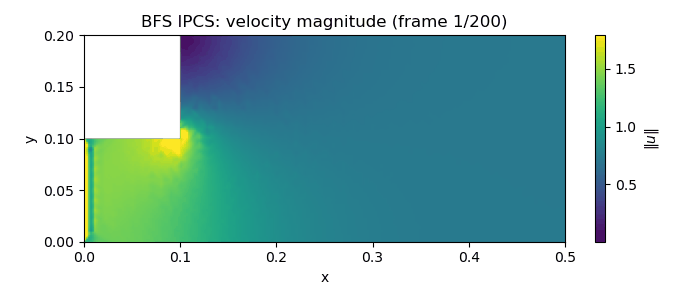
Outlet profiles (QoI) for representative parameters
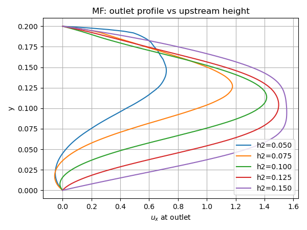
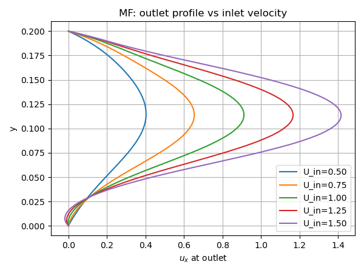
POD energy (surrogate compression)
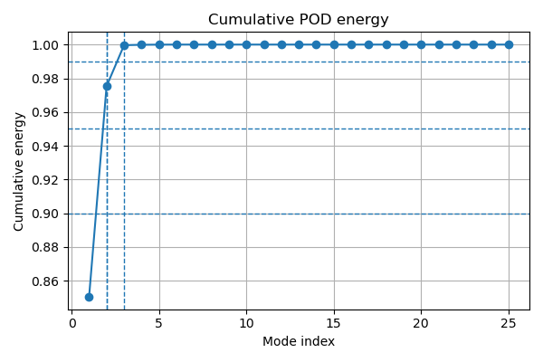
Surrogate prediction examples (median and worst)
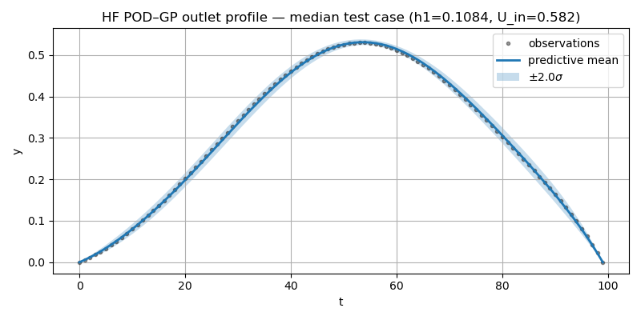
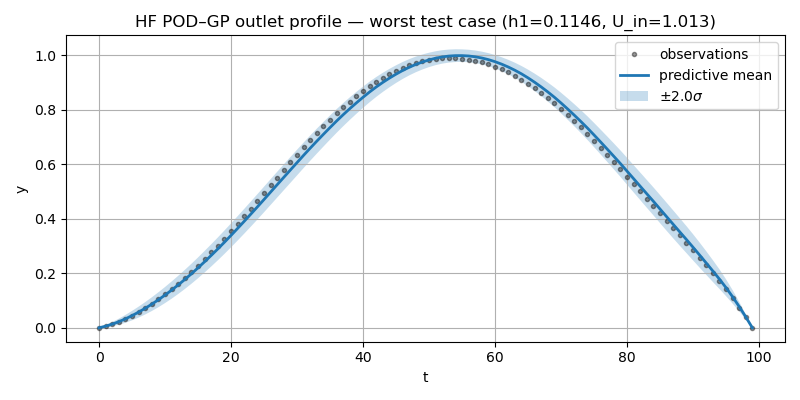
Noisy Observation
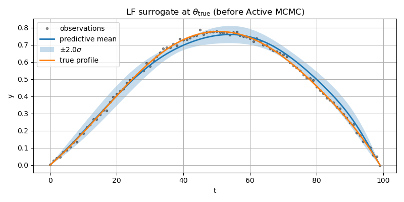
Posterior using MCMC Active Learning
Not reliable and seed-dependent.
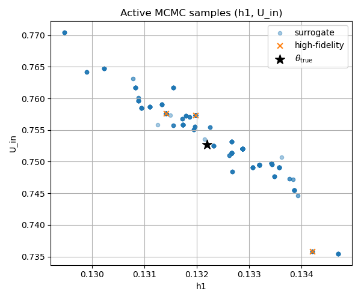
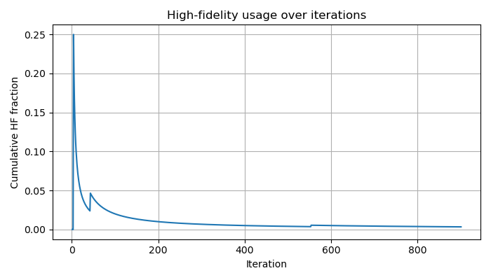
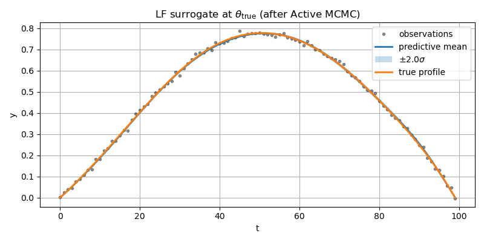
Posterior using DA-MCMC Active Learning with Adaptive Subchain
Robust and accurate.
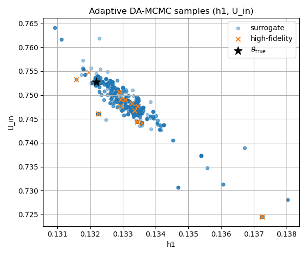
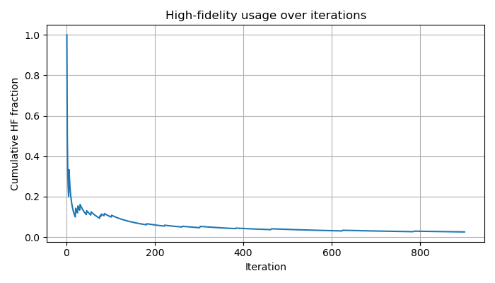
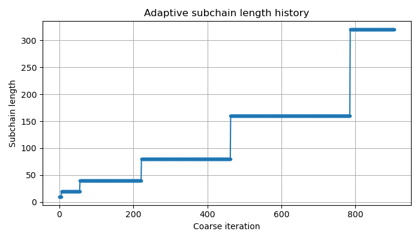
Summary
Active MCMC summary: {'n_steps': 901, 'n_dim': 3, 'move_fraction': 0.04666666666666667, 'hf_call_fraction': 0.003329633740288568, 'n_hf_calls': 3, 'posterior_rmse': 0.02565835473083319}
Adaptive DA-MCMC summary: {'n_steps': 900, 'n_dim': 3, 'move_fraction': 0.23804226918798665, 'hf_call_fraction': 0.025555555555555557, 'n_hf_calls': 23, 'mean_subchain_length': 129.20529801324503, 'posterior_rmse': 0.011547864268091526}